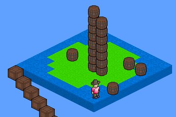

Isometric Game Engine
Even more Javascript. This time in the form of a game engine with quick-n-dirty physics simulation. The goal of this project was to study the new HTML5 <canvas> tag and its performance.

I knew from the start that despite the power of Google’s V8 and other modern Javascript engines I would easily hit the limits of Javascript’s performance. No matter how strong your JS is you can never reach the efficiency of an equivalent piece of C/C++, although JITting gets you pretty close (see also: ASM.js). In case of physics engine this makes picking the right algorithms even more important.
One of the most computationally expensive parts of physics simulation is collision detection. In this phase the engine tries to find pairs of moving bodies that have just bumped to each other. The algorithms are usually required to return exact point(s) and surface normals of contact, which makes them relatively costly.
We can fortunately minimize the amount of these calls by using a lighter algorithm on top of it to filter pairs of bodies known to be far away. Bullet physics engine calls it the Broadphase.
The problem can be summarized as follows: Given body at location X, return list of bodies not further than Y units away. For static, non-moving objects I chose the Bounding Interval Hierarchy data structure. It allows me to do fast O(log n) spatial lookups. Moving objects are scanned with a Sweep line (or Sweep&Prune) algorithm that allows me to benefit from coherency between consecutive frames.
Graphics are a bit more interesting. Basically every object is represented as a rectangular cuboid and the system maintains a directed acyclic (unfortunately, in some rare cases cyclic) graph where each link represents drawing order. The graph is flattened to an array and finally used as the final rendering order for the objects.
The latest development version also includes a level editor, ability to register, log in and save levels.
You can try an older version here: http://haapa.la/plethora and the latest (alpha) version here: http://haapa.la/devplethora